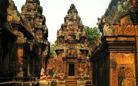

Welcome to Our Tourism & Monuments Website
Explore the rich heritage and iconic monuments of India, Vietnam, and Cambodia. Scroll down to learn about the top tourist destinations with beautiful images and detailed information. Your journey to discover the world’s culture and history begins here.
Top Tourist Spots of India
.jpg)
Taj Mahal

Gateway of India

Qutub Minar
Top Tourist Spots of Vietnam

Halong Bay
My Son Sanctuary

Cu Chi Tunnels
Top Tourist Spots of Cambodia

Angkor Wat
Bayon Temple

Banteay Srei
About Us


Recognition of an International Dimension in Schools:
The India RIDS programme, formerly known as ISA and then IDS, rewards schools committed to embedding international awareness within their curriculum. RIDS provides a framework for schools to develop international activities across the curriculum, including collaborative work with partner schools, and opportunities to involve the wider community. Schools plan, execute and evaluate a range of project-based school activities which are then assessed against the RIDS criteria for certification. The India RIDS programme has evolved from the British Council’s global International School Award (ISA) programme which was active in 31 countries worldwide and is currently being delivered in the vUK, Greece, and Nigeria. In India, ISA/IDS ran from 2003 to 2020, reaching over 4000 private and government schools.